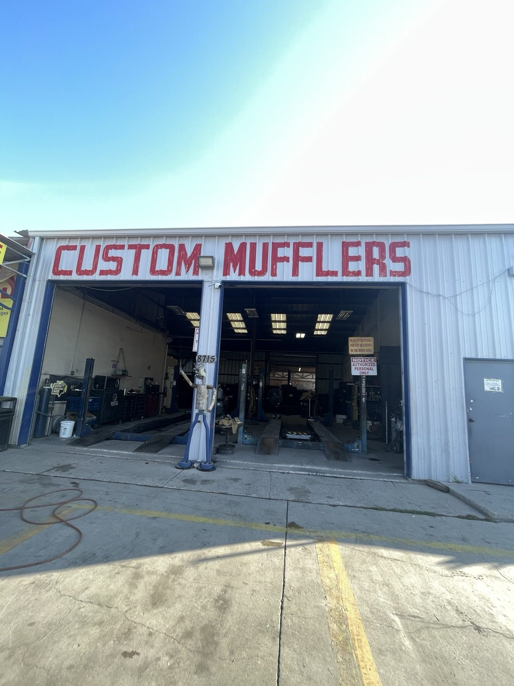

Exit 1
Flat repair
Nail in the tire? Patches go quickly, sometimes without leaving the car.
- Tire patches
- Nails and punctures
- No long wait
Mufflers and tires · Grissom Rd, San Antonio
Quick tire patches, new tires, custom mufflers and rim fixes. Look for the blue CASIAS sign.

Services
What's ahead
Tires, mufflers, rims and repairs, the same list printed on the yellow banner out front.
Exit 1
Nail in the tire? Patches go quickly, sometimes without leaving the car.
Exit 2
Tell us what you drive. We can often get tires the next day.
Exit 3
Custom mufflers and exhaust work, with a wall of exhaust tips in the shop.
Exit 4
Cracked or bent rim? We can repair it or move your tire to a new rim.
Exit 5
Straight tracking and even wear, done in the shop's open bays.
Exit 6
The banner out front lists brakes, tune-ups, oil changes and batteries.
Scenic route


Rest area
The pole sign reads General Mechanic, Mufflers and Tire Shop, with a little mechanic rolling a tire. The storefront says Custom Mufflers in red.
Tire patches, new tires and rim repair, done quickly. Ask questions and get straight answers.
The yellow banner over the door lists the rest: brakes, alignments, tune-ups, oil changes, batteries, A/C and more.

What drivers say
“Fought tire bent rim , full tire I need a quick fix? I have been coming here for years. They are so quick and efficient. In fact sometimes you do not even have to get out of your car. Usually they are able to patch my tire really quickly but this past visit I actually had a cracked rim and I needed the tire removed and put onto a new rim and the spare put back into the trunk.”
“Needed tires badly and Antonio was able to get me them immediately next day! Antonio answer all my questions and actually educated me a little bit about tires which I really do appreciate I would give 10 out of 10 Stars if I could for his service professionalism and care for customer needs! Definitely will be coming back!”
“Found a big nail in my mother‘s tire and was pretty excited that this place was open till 530 on Sunday. I showed up at 4:55 only to find them closed. Two stars for having those late hours when people need them. -3 stars for not honoring those hours.”
Find us
8715 Grissom Rd, San Antonio, TX 78251
Look for the blue CASIAS pole sign and the Custom Mufflers storefront. Open every day.